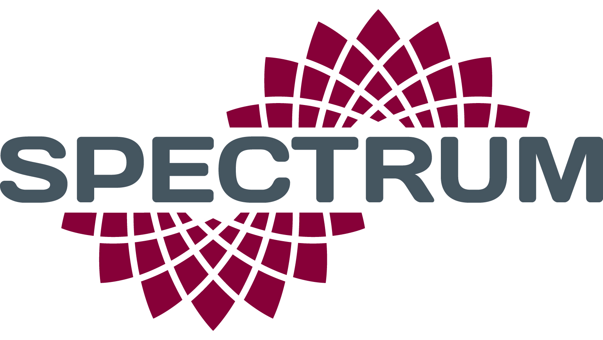

The GPS Sensor was created to track the location of an airplane while in flight. The sensor would record data such as the coordinates, altitude, etc. and sends this information to the client to store in an SQL database. The user was then able to retrieve the information from the database as a playback to view the plane’s location throughout the flight.
This was an individual project that I worked on during my internship. I first attached a GPS sensor, gyrometer, and accelerometer to a Raspberry PI and wrote some code in Python to ensure that there was data collection. I then used Python and ZeroMQ to wirelessly send this information from the Raspberry Pi to another device. Then, I saved the information I was receiving from the Raspberry Pi to a Timescale DB. This completed the first part of the project.
For the second part of this project, I worked on writing code to retrieve the information from the database for playback. I also developed a GUI for this feature, where users could adjust the speed of the playback or jump to different areas of the data.
From this project, I learned more about the Raspberry Pi, and how different sensors can be attached to read data. I gained more experience working with python, sockets, and databases. I also learned a lot about wireless communication and creating a GUI.
Here is some code that illustrates how the sensor values were read and sent using packets:
# format and send data in a loop
while True:
current_date = datetime.datetime.now()
gps_results = detect_location(gps).split(',')
packet['date'] = current_date#f'{int(current_date[:2])}:{current_date[2:4]}.{current_date[4:6]}'
packet['latitude'] = gps_results[1]
packet['longitude'] = gps_results[2]
#send acceleration and gyro to client
packet['accelx'] = str(sensor.acceleration[0])[:6]
packet['accely'] = str(sensor.acceleration[1])[:6]
packet['accelz'] = str(sensor.acceleration[2])[:6]
packet['gyro'] = "Gyro X:%.2f, Y: %.2f, Z: %.2f radians/s" % (sensor.gyro)
#calculate pitch and roll
accel_x = sensor.acceleration[0]
accel_y = sensor.acceleration[1]
accel_z = sensor.acceleration[2]
packet['senspitch'] = str(-(math.atan2(accel_x, math.sqrt(accel_y*accel_y + accel_z*accel_z))*180.0)/math.pi)[:6]
packet['sensroll'] = str((math.atan2(accel_y, accel_z)*180.0)/math.pi)[:6]
#send packet
zmqpacket = f"DATA,{packet['date']},{packet['latitude']},{packet['longitude']},{packet['accelx']},{packet['accely']},{packet['accelz']},{packet['senspitch']},{packet['sensroll']}"
publisher.send_string(zmqpacket)
print('SENT:')
print(zmqpacket)
# wait for 5 seconds
time.sleep(5)
You can see the full code at the GPS Sensor Repo.